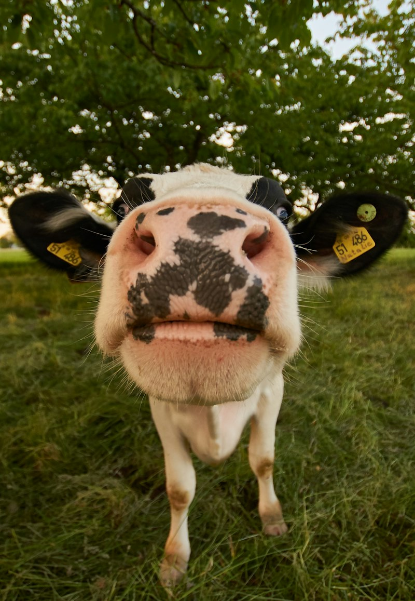
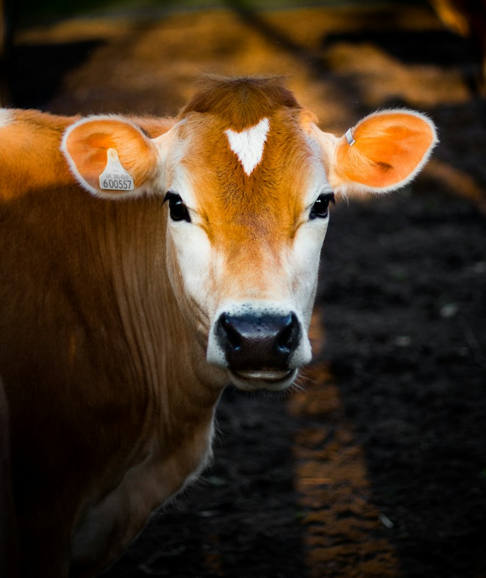

Livestock Farming
Cattle, sheep and goats raised on well-managed ranches with quality feed, veterinary care and modern husbandry.
Overview
Healthy Animals, Quality Meat
Our livestock division runs managed ranch and feedlot operations supplying live animals and quality meat to markets, processors and institutions. Herds graze on improved pastures and are finished on balanced rations produced from our own crop residues and feed formulations.
- Improved breeds and structured breeding programme
- Regular veterinary care and vaccinations
- On-farm feed production from our own crops

Our Herds
What We Raise
Cattle
Beef and breeding stock raised on pasture and feedlot.
Sheep & Goats
Hardy flocks for meat, festivals and breeding.
Meat Processing
Hygienic slaughter, processing and packaging through our agro-processing hub.
Need Quality Livestock?
Live animals, breeding stock and processed meat — talk to our team.